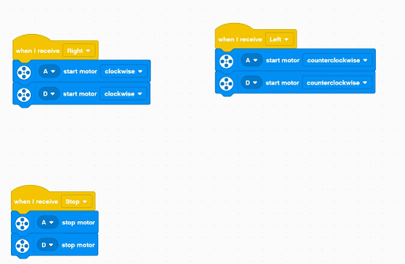

My Project

In our Year 10 Digital Technology class, we built games for people to play at the Year 10 Market Day. My project was Comet Catcher. Comet Catcher is a marble drop game where people have to catch the marbles coming down. If enough marbles are caught then they would win a prize. We started this project at the start of term 3 and Market Day was in week 8. We spent a lot of time building the marble drop zone (12 full hours). Then we had to build the frame and code the vehicle we were using to catch the marbles. I had chosen Digital Technology for semester 2 but had not done it in semester 1 and I wasn't looking forward to it at first as I didn't know if any of my friends would be there. I eventually had Miglia join me just before semester 2 started. When we learnt that we were creating a carnival game we had a few ideas. Miglia and I came up with the options of either cornhole or a marble drop. Eventually we decided on a marble drop.
We decided we would use skewers and cardboard to create the 'drop zone' and ePro8 gear for a stand. The stand was a 900x900mm frame on a slight tilt for the drop zone to fit on. We had to make a background which Miglia designed. We went through multiple tries of making the sizing correct, and the first time we failed and printed 16 sheets of paper and then got it laminated before we realised anything was wrong. After that we gave up on laminating it. Then we made the backboard for it to go on. We had to make measurements on how big the gaps between the skewers would be. The final measurements were 4.5 mm between all the skewers. With 200 skewers needed we had to work for a very long time to poke all the holes, cut all the skewers and poke all the skewers through.
For marketing we used Canva to make a poster(shown at top). We also made a price sheet with a similar theme. The ideas behind the levels and prices was Level One and Two would be for fun and therefore cheaper but if you played level three you could win a prize. The prizes were jars of lollies that had been packed to contain a certain number of Fruit Bursts and one of each type of lolly in the Party Mix we bought. When designing the posters we decided to use a space theme and designed it around the name of our game, Comet Catcher. While making the posters we had a small argument about the difference between a comet and a meteor and ended up using meteors on the poster which annoyed me greatly.
We ended up using an EV3, instead of a Microbit like the rest of the class, to control the basket used to catch the marbles. We had to code it to move in two different directions which wasn't too hard. We used two of the buttons on the EV3 to move in two different directions. The code we ended up with was when the button A was pressed the EV3 would move forward and when button D was pressed the EV3 would move backwards. Because of how we positioned the EV3 this meant it was moving left and right.

When testing on the week of Market Day we found that the ping-pong balls we were planning to use were too big and were getting stuck. So after school that day I had to go out and buy some marbles. We encountered another problem the night before when I learnt that the EV3 only used a special charger which we did not have. After a panic and more research I discovered that the EV3 could also use AA batteries, so I had to search the house to find enough of these.
While Miglia and I were setting up for Market Day, Hannah came and started helping us as she was one of two who were not participating in Market Day in our core class. We all transported the gear from the Digi Room to the Dining Room lawn. We set up in the shade and had to readjust the table so that it was not on a slope. Then, when people started coming out of class, Miglia and I got ready for people to play our game. No-one did. At least for the first part. The people playing our game mainly consisted of people we already knew but it was okay. We ended up doing IOUs, but only to people we trusted would pay us back.


In reflection, I think market day was a success. We made $26.50 and $8 in profit. I feel for a digi project we spent too much time on the build and not enough time on the coding. If we had had more time, and all the EV3 gear, I think we should have connected 2 EV3s via radio signals for controlling the basket. This would have meant that people playing our game were not forced to move with the EV3, because on the actual day it was connected to the basket with a short wire.